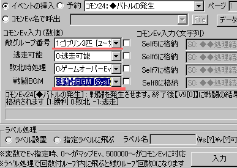
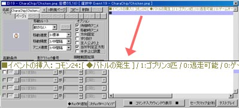
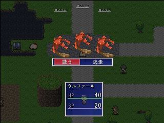

・まずマップ選択
切り替えて下さい。
・適当な場所にイベントを作成して
ニワトリの画像を設定しておきます。
（ここでは右の画像の位置に設置）
→ 分からないときは、
◆新しいイベントを作ってみたいの
【1】～【5】までの手順をまねてください。

【目標】
サンプルゲームの「サンプルマップA」に、
「ゴブリン3体」とのバトルを発生させるニワトリのイベントを作ります。
| 【1】 ・まずマップ選択 切り替えて下さい。 ・適当な場所にイベントを作成して ニワトリの画像を設定しておきます。 （ここでは右の画像の位置に設置） → 分からないときは、 ◆新しいイベントを作ってみたいの 【1】～【5】までの手順をまねてください。 |
|
| 【2】 イベントウィンドウの右下にある 「■コマンドウィンドウ表示■」を クリックしてください。 |
 |
| 【3】 「イベントコマンドの挿入」ウィンドウが 出てくるので、上部タブにある 「その他2」を選択して下さい。 |
 |
| 【4】 「イベントの挿入」を選び、 コモン24「◆バトルの発生」を 選択します。 |
 |
| 【5】 次に、「コモンEv入力（数値）」の欄を、 以下のように設定します。 ・出現させたい敵グループ [1:ゴブリン3体] ・逃走可能に「0:逃走可能」 ・敗北時処理処理 「0:ゲームオーバーEv」 ※[0:ゲームオーバー処理 / 1:イベント続行] の2つがありますが、ここでは負けると ゲームオーバーイベントが起きるようにします。 ・BGMに「3:戦闘BGM」 設定したら「入力」をクリックしてください。 |
 |
| 【6】 最終的に、右のような状態に なっていれば成功です。 |
 |
| 【7】 さて、マップをセーブして、 作ったイベントをテストしてみましょう。 「セーブ（マップ全体）」をクリックした後、 「テストプレイ」をクリックしてください。 |
 |
| 【8】 テストプレイを開始し、 ニワトリに向かって決定キーを押すと、 無事、ゴブリン3体と戦闘になりました！ これで、話しかけるたびに 何度でもこの戦闘が発生する、 シンプルな戦闘イベントが完成しました。 おつかれさまです。 |
 |
＜執筆者：SmokingWOLF＞